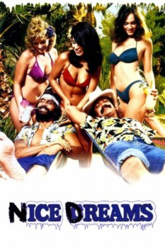

Country:United States, 88 minutes
Spoken languages:English
Genres:Comedy
Director(s):Tommy Chong
Writer(s):Tommy Chong, Cheech Marin
Video Codec:Unknown
Number: 1497

Certification:R
Storyline:
Nice Dreams - it rhymes with ice creams. And that's what Cheech and Chong are selling in this thoroughly wacky comedy. The outrageous, permanently spaced-out duo sells enough of their "specially mixed" ice cream to take the cash and realize their fondest dreams: new guitars, islands in the sun and beautiful women. But, of course, not everything goes as planned. While celebrating their wealth in a new wave Chinese restaurant, Cheech meets his long-lost love Donna, and promptly escorts her to her posh penthouse. He soon learns, however, that Donna's boyfriend, an ex-con named Animal, is on his way to her boudoir. Meanwhile, Chong has unwittingly exchanged all their money for a worthless bank check - and the only way to get it back is to escape into a nearby insane asylum.
Cast:
Cheech Marin (as Cheech), Tommy Chong (as Chong), Stacy Keach (as Sergeant Stedenko), Timothy Leary (as Self), Evelyn Guerrero (as Donna)
Medium: Media file,
Location: D:\Cheech and Chong\[1981] Nice Dreams.mp4
Loaned: No
Aspect ratio: Unknown